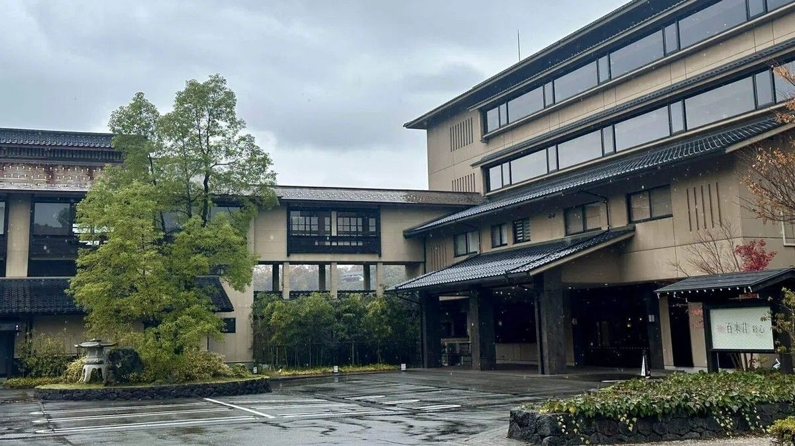
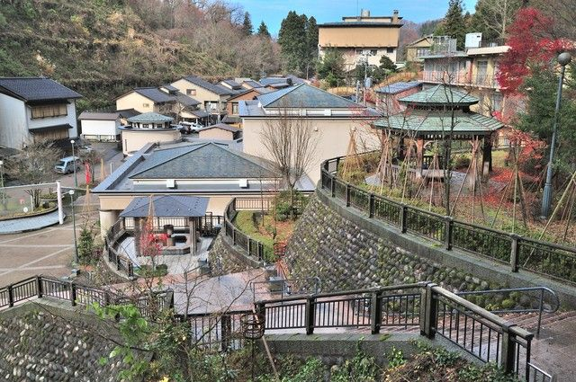

← 花咲くいろはマップに戻る 旅館街（喜翠荘のモデル地区） 作品 花咲くいろは 備考 湯涌温泉街の入口付近に旅館が軒を連ねるエリア。主人公が働く旅館「喜翠荘」は、この一帯の旅館の外観・内装を取材して描かれたとされる。下のシーンは、結名の実家である喜翠荘のライバル旅館・福屋のモデルとなった建物。 現地写真  アニメのシーン 福屋（結名の実家・喜翆荘のライバル旅館）のモデルとなった建物 その他の写真 